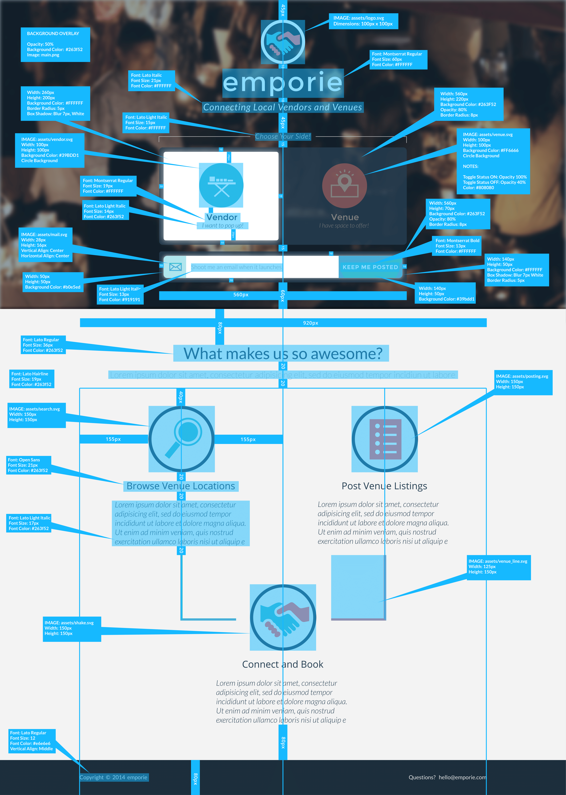

emporie
Emporie is an web application that strives to match local vendors who wish to pop up with venues. This project is currently under development. Please check back later, or check out our sign up page at: www.emporie.com


emporie
Emporie is an web application that strives to match local vendors who wish to pop up with venues. This project is currently under development. Please check back later, or check out our sign up page at: www.emporie.com
© 2015 Jin W. Roh
Design & Development